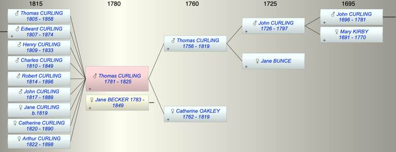

| [Index] |
| Thomas Oakley CURLING (1781 - 1825) |
|  |
| b. 1781 |
| +. Jane BECKER (1783 - 1849) |
| d. 1825 aged 44 |
| Parents: |
| Thomas CURLING (1756 - 1819) |
| Catherine OAKLEY (1762 - 1819) |
| Siblings (1): |
| Catherine CURLING (1783 - 1805) |
| Grandchildren (4): |
| Charles Edward Napier CURLING (1835 - 1895), Arthur Henry CURLING (1841 - 1902), Rosalina Jane CURLING (1843 - 1901), Emily Theresa CURLING (1844 - 1926) |
| Events in Thomas Oakley CURLING (1781 - 1825)'s life | |||||
| Date | Age | Event | Place | Notes | Src |
| 1781 | Thomas Oakley CURLING was born | ||||
| 1805 | 24 | Birth of son Thomas CURLING | |||
| 1807 | 26 | Birth of son Edward CURLING | |||
| 1809 | 28 | Birth of son Henry CURLING | |||
| 1810 | 29 | Birth of son Charles CURLING | |||
| 1814 | 33 | Birth of son Robert CURLING | |||
| 1817 | 36 | Birth of son John CURLING | |||
| 1819 | 38 | Birth of daughter Jane CURLING | |||
| 1819 | 38 | Death of father Thomas CURLING (aged 63) | |||
| 1819 | 38 | Death of mother Catherine OAKLEY (aged 57) | |||
| 1820 | 39 | Birth of daughter Catherine CURLING | |||
| 1822 | 41 | Birth of daughter Arthur CURLING | |||
| 1825 | 44 | Thomas Oakley CURLING died | |||
| Created on a Mac™ using iFamily for Mac™ on 8 Oct 2023 |